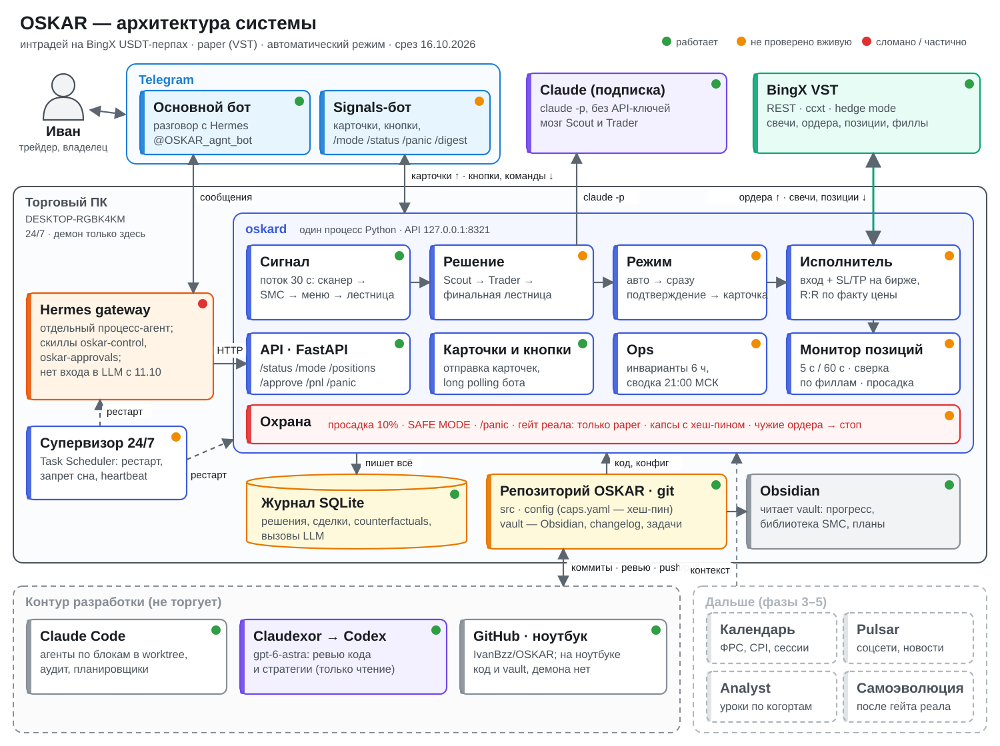

OSKAR · BingX USDT-перпы · интрадей 15мАВТОМАТ · VSTсрез 16.10.2026 · 05:00 МСК · R1 + H2 + I
Пульт OSKAR
Что готово, что проверено на бирже и что дальше. Источники: 4 аудитора Claude (сверка с эталоном целей), Codex gpt-6-astra (ревью стратегии, планировщик, думающий центр), журнал data/oskar.db и логи демона.
Закрытых сделок0 / 60гейт реала: PF ≥ 1.3 на 60
Аптайм за 7 дней16.7%28 ч из 168; супервизора не было
Кандидатов в журнале266до биржи дошел 1
Тестов590в main; ветка F ждет выкатки
Вызовов LLM98Scout 84 · Trader 14
Коммитов63+2 в ветке F; только от Ивана
Путь к реальным деньгам
фазы плана v2 · 25.08
Ф0
Фундаментконституция, контракты, капсы с хеш-пином, vault, хуки
85%
Ф1
Ядро + paperданные, SMC, лестница, журнал, исполнение — код есть, биржей не подтвержден
Гейт реала0 / 60 сверенных сделок одной версии политики
Архитектура
вся система · срез 16.10

Схема всей системы · на телефоне листается вбок
Блоки системы
две шкалы: код · проверено на бирже
Воронка сетапов
весь журнал · 30.08–16.10
Где теряется поток: лестница режет confluence-гейтом (дневной тренд фактически обязателен, свечной паттерн никогда не заполняется); Scout отказывает в 84% потому что не видит событий структуры; Trader выбирал из меню комбинации, которые лестница заведомо отклоняла (7 из 12) — блок F это закрывает.
Аптайм демона
09.10 03:40 → 16.10 03:40 МСК
Зеленое — демон работал. Простои: сон ПК (13.10, 17.7 ч и 12.6 ч), смерть вместе с сессией Claude (15→16.10, 18.5 ч), ни одного алерта в Telegram. Блок G: супервизор с перезапуском, запретом сна на время работы и сторожем по heartbeat.
Работа по блокам
15–16.10
Блок
Что
Статус
План на две недели
сведено: планировщик Codex + думающий центр
16–17.10 · R1
Живой контур и защита капиталав бою с 04:19
Супервизор 24/7 (G), R:R по фактической цене, стоп по просадке, белый список гейта реала, SAFE MODE переживает рестарт (H). Первые автосделки на VST: вход → SL/TP на бирже → закрытие → сверка по филлам.
приемка: 0 входов с R:R < 2 по факту · рестарт ≤ 2 мин · reconciled=1
18–20.10 · R2
Воронка без мертвых комбинацийветка block-f-funnel
Trader видит только проходящие тройки, R-тейки в net-R от своей пары вход/стоп, когорты executed/pending/error, модель в журнале (F).
приемка: 0 отказов финальной лестницы из-за меню за 48 ч
18–23.10 · R3
Честные данные
Резолвер counterfactuals v2: полное покрытие свечами или no_data, жизненный цикл ордера как вживую, версии. Пакет воспроизводимости решения. Ledger ст. 5.
приемка: реплей 20 свежих решений совпадает на 100%
21–25.10 · R4
SMC-адаптер по курсу
OB: тело/фитиль, первый тест; FVG: процент заполнения и ближняя граница входа; связь свип → BOS → origin с временами событий. Сначала shadow.
приемка: 0 нарушений порядка/стороны/свежести
25–29.10 · R5
Одна модель SH–BOS–RTO и роль LLM
HTF POI и структура (H4/H1), 15м подтверждение. Scout как наблюдатель в заранее назначенной группе (решение Ивана), Trader против фиксированного правила.
цель к 29.10: ~20 закрытых сверенных сделок
Что нашли Claude и Codex
аудит · ревью · думающий центр
Claude — 4 аудитора + думающий центр
Аптайм 16.7% — главный тормоз «реальных кейсов»; ПК засыпал, демон умирал с сессией.
SAFE MODE не переживает рестарт — с авто-перезапуском защелка «позиция без SL» снялась бы молча.
Кнопка «Маркет» обходила кап R:R: у BERA вышло бы 0.23 при капе 2.0.
Гейт реала — черный список строк: опечатка в mode + sandbox:false = реальный BingX.
Hermes без LLM с 11.10 (авторизация Nous), approve через Hermes ничего не исполняет.
Obsidian-дашборд застыл на 26.08, доска задач отстает от changelog.
Codex gpt-6-astra — стратегия, план, гипотезы
SMC — набор примитивов, не модель курса: нет связки свип → BOS → возврат к origin, нет HTF-SMC и displacement.
FVG «умирает» на первом касании, вход от дальней границы вместо ближней; OB от всего диапазона свечи, а не тела.
Дневной тренд фактически обязателен: веса 1/2/3.5/5 — без D1 направление не набрать.
Валовый 2R-тейк никогда не проходит fee-adjusted гейт 2.0 — опция меню мертвая.
Counterfactuals годятся для поиска дефектов, не для настройки доходности.
Поправка к моим прошлым выводам. «+40R отсечено гейтом R:R» и «+23R у Scout-pass» — артефакты. Режет не R:R, а confluence-гейт (92 из 94); без поздно дорешенных исходов у Scout-pass +3.4R на 44 сетапа (+0.08R до комиссий). Снижать капсы оснований нет.